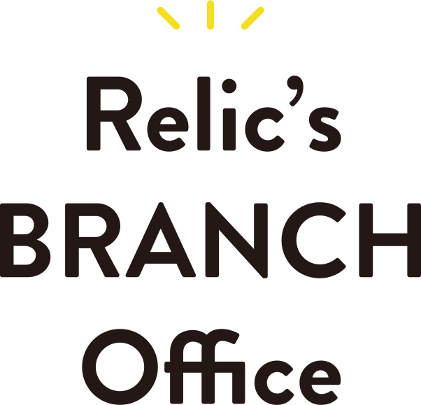

Branch Office 地方拠点一覧


株式会社Relicは創業以来、「大志ある挑戦を創造し、日本から世界へ。想いを持った挑戦者と共に走り、共に創る」「⽇本発の新規事業やイノベーションを共創するプラットフォームとなり⽇本経済と地域を活性化する」という理念を持って事業展開を行ってきました。
東京をはじめ関東エリアを中心に事業を展開してきましたが、近年は全国各地への事業展開や地方創生にも注力しています。
Relicの理念のもと、地方にある企業様と伴走し事業の発展を共に担い、地方のIT人材の活性化を推進していきます。
私たちと一緒に、地方から、日本経済の活性化や世界に誇れる事業の共創に挑戦しませんか？
.contents-wrapper classを使えます
.bg-white 白背景のutility class
.bg-gray グレー背景のutility class
font-family: Jost